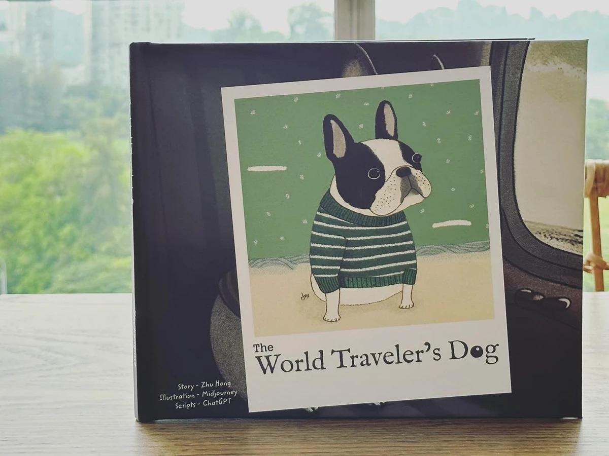
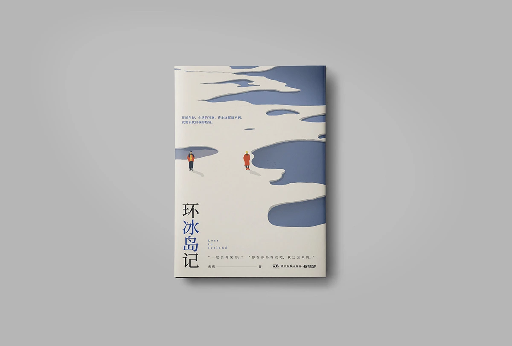
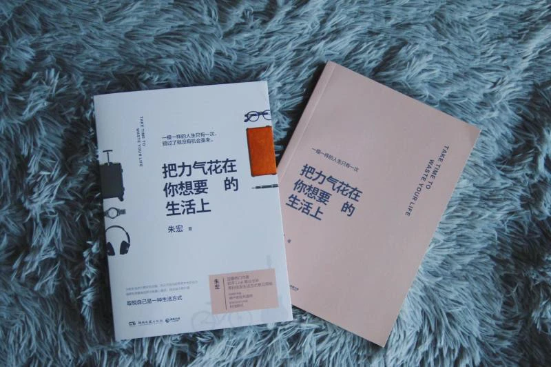
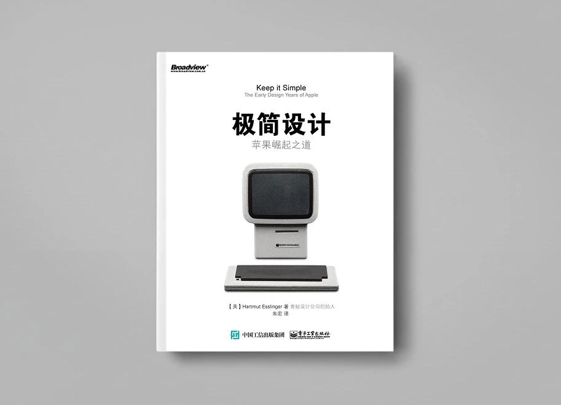

Writing
Fiction, essays, and translations. A place for life beyond objects.

2025 / Published workThe World Traveler’s Dog
Read about the book ↗
2020 / Published workLost in Iceland
Read about the book ↗
2016 / Published workTake Time to Waste Your Life
Read about the book ↗
2015 / Published workKeep It Simple
Read about the book ↗There are shorter pieces too, about life and everyday things.
Browse the notes ↗ · Full bibliography ↗